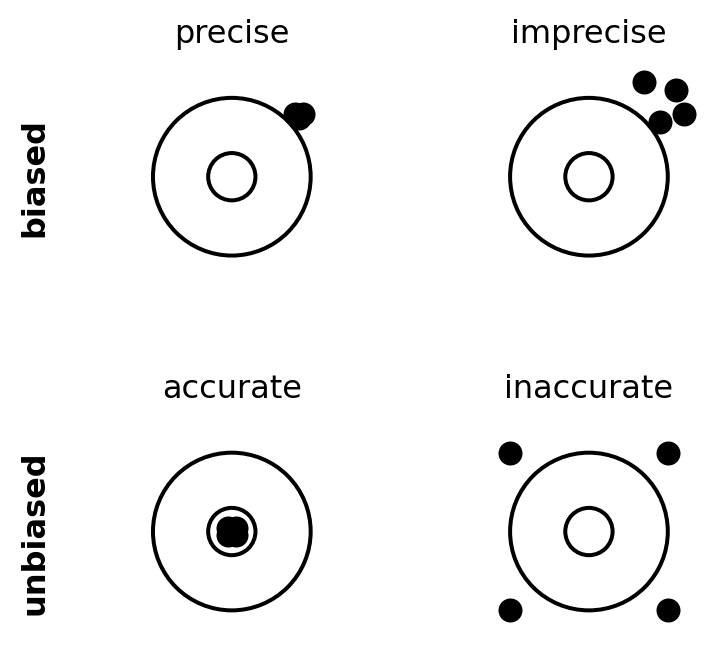

Code
import matplotlib.pyplot as plt
# Funktion zum Zeichnen eines "Zielscheiben"-Diagramms mit Punkten
def draw_target(ax, points, title, label_y=None):
# Zeichnen der Zielscheibe (zwei konzentrische Kreise)
target = plt.Circle((0, 0), 1, color='black', fill=False, lw=1.5)
inner_circle = plt.Circle((0, 0), 0.3, color='black', fill=False, lw=1.5)
ax.add_artist(target)
ax.add_artist(inner_circle)
# Punkte hinzufügen
for (x, y) in points:
ax.plot(x, y, 'ko', markersize=8)
# Formatierung
ax.set_xlim(-1.5, 1.5)
ax.set_ylim(-1.5, 1.5)
ax.set_aspect('equal')
ax.axis('off')
ax.set_title(title, fontsize=12)
if label_y:
ax.text(-2.5, 0, label_y, va='center', ha='center', rotation=90, fontsize=12, fontweight='bold')
# Punkte für jede der vier Kategorien
points_precise_biased = [(0.8, 0.8), (0.85, 0.75), (0.75, 0.85), (0.8, 0.9)]
points_imprecise_biased = [(1.1, 1.1), (0.9, 0.7), (1.2, 0.8), (0.7, 1.2)]
points_precise_unbiased = [(0.05, 0.05), (-0.05, 0.05), (0.05, -0.05), (-0.05, -0.05)]
points_imprecise_unbiased = [(-1, 1), (1, -1), (-1, -1), (1, 1)]
# Erstellen des 2x2 Plots
fig, axs = plt.subplots(2, 2, figsize=(8, 8))
# Obere Reihe (biased)
draw_target(axs[0, 0], points_precise_biased, "precise", label_y="biased")
draw_target(axs[0, 1], points_imprecise_biased, "imprecise")
# Untere Reihe (unbiased)
draw_target(axs[1, 0], points_precise_unbiased, "accurate", label_y="unbiased")
draw_target(axs[1, 1], points_imprecise_unbiased, "inaccurate")
# Layout anpassen
plt.subplots_adjust(wspace=0.5, hspace=0.5)
plt.show()